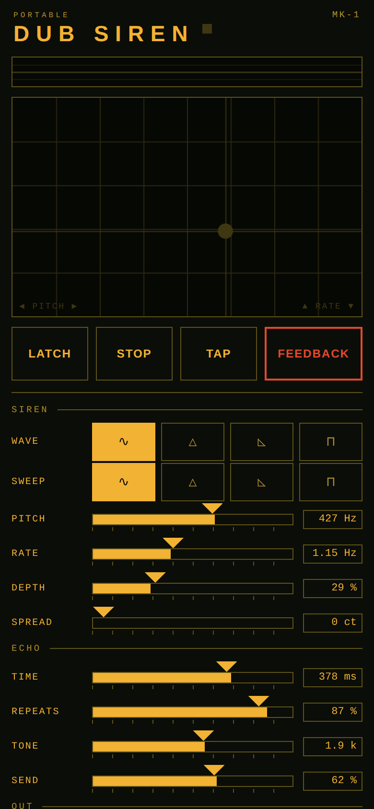
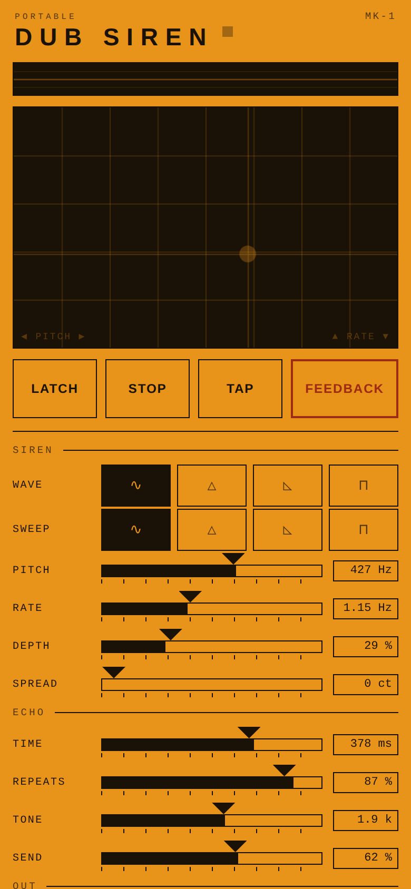

Portable
Dub Siren
A dub siren you can actually play. One finger on the plate bends the pitch and the sweep at once, the echo answers like tape, and nothing sits between you and the sound.
The browser version runs the same engine, with no install and no account.


The instrument
Built to be played, not configured
Most siren apps give you sliders and leave you there. This one puts a plate under your finger: left to right is pitch, bottom to top is how fast it sweeps. You move, it moves. Everything else is there to shape what that gesture does.
Touch plate
Two axes under one finger. Drag to glide; lift and it stops, unless you latched it.
Latch and Tap, mid-hold
Found a sound you like? Tap Latch with a second finger and lift off — it keeps running. Tap tempo works the same way, without dropping the note.
Tape-style echo
Delay time glides when you turn it, the repeats saturate, and the Feedback button throws the whole thing into a swell while you hold it.
Six presets, solved not guessed
Air raid, police, laser, UFO, horn and dub — each worked back from real target frequencies and cycle times. Hold one down and it plays like the plate does.
Three memories
Hold a slot to save what you've got, tap it to bring it back. They survive closing the app.
Two grounds
Amber on dark ink, or dark on amber. It follows your system setting, and one button overrides it when the room disagrees.
No strings
It works with the network off
The whole instrument runs on your device. No account, no sign-in, no analytics, nothing phoning home — which also means it works in a basement, on a stage, or on a plane. The only things stored are your three memories and which layout you picked, and they never leave the phone.
Get it
Android, and the browser
- Android
- Coming to Google Play
- Free trial
- 7 days, then [PRICE] a year
- Or once
- [PRICE], yours for good
- Browser
- Open it now — free while it lasts
Subscriptions and one-time purchases are both handled by Google Play. You can cancel a subscription any time from the Play Store, and the trial doesn't charge you if you cancel before it ends.
New to it? The guide walks through every control, section by section.
Say something
Bugs, ideas, or just hello
Two ways in: open an issue on GitHub, or email PortableDubSiren@gmail.com.